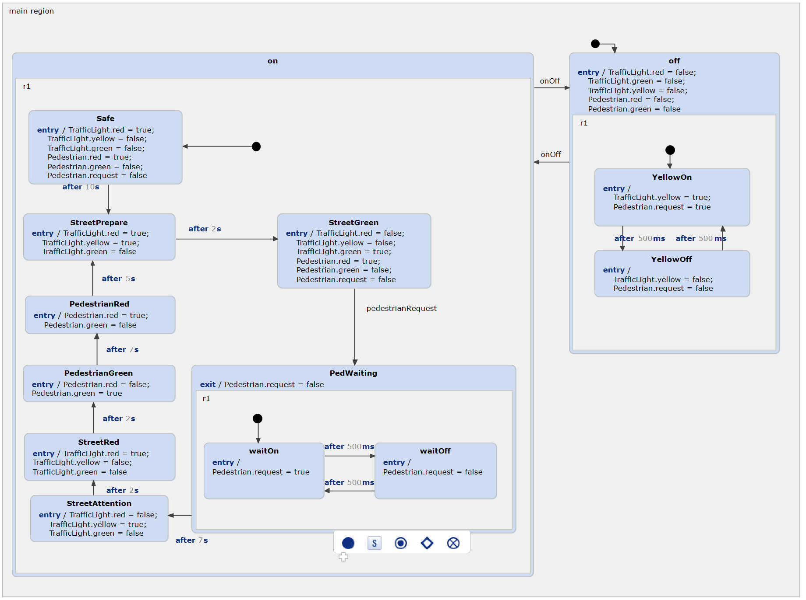
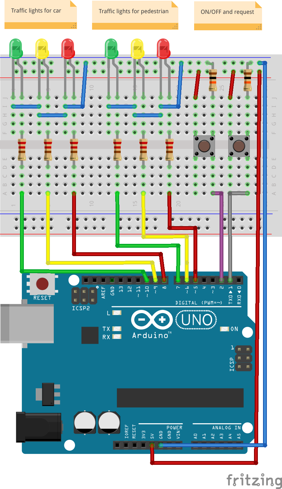

Based on the standard traffic light example, this project shows how to use a statechart to develop software for the Arduino platform.

More information about the statechart itself can be found in the standard traffic light example, which should be considered first. In summary, we have two traffic lights: one for the traffic on the street, and one for pedestrians who want to cross the street. They can push a button to request their traffic light to turn green, which activates a blinking wait-light first. The street's traffic light then goes through the standard procedure, turning on the yellow light, followed by the red light, allowing the pedestrians to cross safely. After some time, the pedestrians' traffic light turns red again, and the cars are allowed to pass until the next request is made by a pedestrian.
Additionally, the traffic light can be switched off completely. This turns the yellow lights into a blinking mode, signaling that the traffic light is indeed switched off and that the street should be crossed in a careful manner.
This video shows how the state machine runs on the example:

The correct pins can be found in the arduinoPins.h file.
Get your parts ready! You will need:
Of course, you can change the pins, but since this represents the pin numbers in the software, don't forget to change them as well.
All Arduino examples can be compiled via command line or be imported into the Arduino IDE. An easier way is using the PlatformIO , which allows you to compile and upload the code directly in VSCode.
The platformIO extension is listed as a recommended extension in this example and can be installed when opening the examples. If not, you can search for @recommended in the Extension view.
After the installation you should notice a new Toolbar, which allows you to compile and flash your Arduino. This example is set up for an Arduino Uno. Although, you can set up any other Arduino via the PlatformUI Extension or the platformio.ini file:
[env:uno]
platform = atmelavr
board = uno
framework = arduino